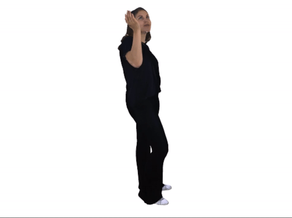
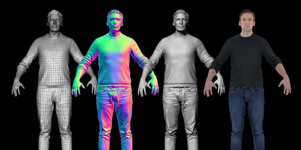
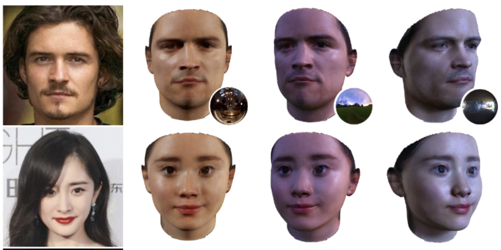
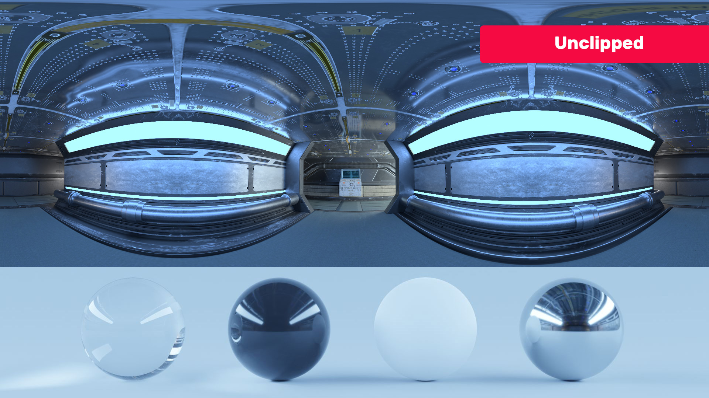

To Infinity And Beyond
Capturing the world one voxel at a time

[ABOUT] - [OVERVIEW] - [ARCHITECTURE] - [PROGRESS] - [REFERENCES] - [3D Volumetric Video Capture] - [OTHER PROBLEMS]
About
We have all grown up watching our superheroes come to life in the Marvel cinematic universe. Don’t you think it is time to wear a suit and join them? With the rise of the metaverse and the reality of the virtual worlds, we could realize our dreams of being vigilantes of the virtual universe. Our volumetric performance capture pipeline aims at easing the entire capture pipeline enabling everyone to live their dreams. Unlike traditional capture systems which range from high-end light stage-based capture to multi-DSLR camera setup, we target to create our relightable virtual replicas using single iPhone-based captures. We utilize 3D deep learning technology to aid our volumetric performance capture and rendering pipeline. Our virtual counterparts are captured as PBR texture components enabling them to be rendered in different environments from your 3D scanned home to the depths of Mordor in LOTR. Also, with the digital fashion assets your options are boundless. Become the next Batman/Superman to the next diva to walk the ramp in France. Try out all the high-end fashion without shelling the big bucks. Party with your heros in their favorite costumes. They would be compatible with traditional software stacks like Unity3D, Unreal Engine or Blender.
Further, the models would be animated using markerless motion capture (mocap) technology. Our pipeline on a high level could be broken down into mmultiple major blocks (a) Full body capture (b) Animation Performance Capture (c) Relightable Environment Renders (d) Digital Fashion Asset creation. Our solutions unlock the creativity in the hands of everyone to produce Hollywood-style animation using just a mobile phone.
Overview
As mentioned in the previous section there are four major blocks. The first block involves full body capture where we scan a stationary person preferably in an ‘A’ pose or a ‘T’ pose. This capture acts as a canonical representation from which we are able to animate all other poses. The captured model is decomposed into their component diffuse, specular albedos and microscopic surface normals. The next block involves learning the weights which are used to deform the canonical pose with respect to the target pose. It involves extracting the performance animation. The poses extracted are used to animate the canonical representation to create our target performance. The next block deals with placing our relightable models in the target environment. The target 3D environments are also generated by static scanning or reusing already created 3D environments shared by users. The final block involves creation of digital fashion assets like virtual costumes, jewels, accessories (bags, belts, hats etc). This enables people to perform virtual photoshoots, VFX shots and ads at a low cost.
Volumetric Performance Capture
Lets dive a little deep into the individual blocks and understand the process in detail.
Full Body Capture
| Scanning Process | Full body scan |
|---|---|
|  |  |
For a full body, a scan involves a person standing in an ‘A’ pose while another person goes around the person capturing the person using LiDAR-based iPhone scans. Using the RGB/D (depth) image we use a hybrid intrinsic-extrinsic representation (namely DMTet) and a differentiable renderer (namely Nvdiffrast) to capture the model geometry and textures (Diffusion and specular albedos and surface normals). Unlike the whole body, the deformations on facial expressions are complex. To enable this we do a high-resolution canonical pose for the face separately.
Performance Animation Capture
| Fullbody animation rig | Face performace capture |
|---|---|
Having captured the canonical mesh representation, the next step is to capture the actual performance. In this stage, we utilize state-of-the-art pose estimation algorithms to capture the 3D pose of the performance (namely OpenPose along with the depth information). With the target performance and the estimated pose, we learn the blending weights for the different poses by minimising the reconstruction error on the rendered images. Here too we run a separate stage to capture the facial performance and learn the blending weights anchored on the facial key points. With the help of the blending weights and the estimated pose, we should be able to build the rig for our replica models enabling them to be animated for any performance.
Religtable Environment Renders
| Faces in different environment | HDRI Environment map |
|---|---|
|  |  |
The final stage involves rendering the performance in the specified environment. For this stage, we create 3D rigid body models of the world. We then extract an HDRI environment map of the scanned 3D environment. Using this environment map, we place our animated 3D objects in the environment and render them to match the encoded 3D world. With this setup in place, we would be able to render our performance in a photorealistic quality under varying environments.
Digital Fashion Asset Creation
We can create digital assets either by using available clothing software like clo3d. However, here plan to scan real life fashion assets into digital virtual assets. Like the way we scan full body using A pose, here to we make human models to wear the fashion assets and then scan them and create the virtual assets. Instead of scanning individual assets separately, we plan to capture the human model wearing all the accessories and capturing the person form multi-view RGBD images. We then use human part segmentation to extract individual accessories and generate their 3D virtual assets. This also enables one to generate digital assets from images available on the internet.